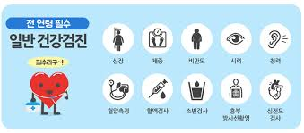
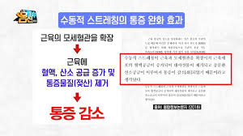
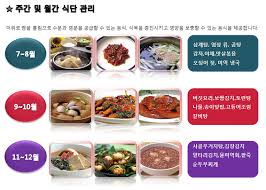

건강 관리를 잘하는 방법
건강을 관리하는 첫번째 방법은 건강검진은 6개월에 한번씩 받는것이다

사람의 몸은 언제 아플지 모르기 때문에 병을 예방하기위해서 건강검진은 6개월에 한번식 받는것을 권한다.
건강관리를 잘할수 있는 두번째 방법
스트레칭은 많은 사람들이 중요하게 생각하지는 않지만 다칠수 있는걸 예방해준다.

스트레칭을 하면 몸이 다치는걸 예방할 뿐더러 근육에 모세혈관을 확장하여 근육에 혈액, 산소 공급 증가 및, 통증물질(젖산)을 제거 해주는 역할을 한다.
건강관리를 잘할수 있는 세번째 방법

옆에 사진과 같이 식단관리를 잘하는 것이다. 식단관리를 많은 사람들은 다이어트를 하기위해서 식단관리를 하는 사람들이 많다.
하지만 옆에 사진을 보면 식단관리의 효능을 볼수있다.